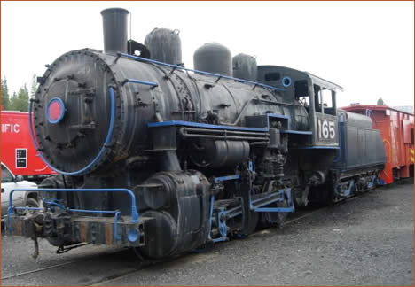

Last updated: 17 July 2015
| Builder: | ALCO (Schenectady) |
| Build #: | 58787 |
| Date: | 1919 |
| Engine #: | 165 |
| Railroad: | Western Pacific |
| Website: | www.wplives.org |
| Email: | info@wplives.org |
| Location: | Western Pacific Railroad Museum, 700 Western Pacific Way Portola, CA 96122-8636 |
| GPS: | 39.805172, -120.473830 Parking. (best guess) |
| Phone: | 530-832-4131 |
| Status: | Operational |
| Notes: | Came from Pleasanton Fairgrounds, then PLA. This is the only steam locomotive at this museum. But, they claim the largest collection of diesel locomotive in California. They have a lot of rolling stock as well. |
| Hours: | Museum appears to be closed most of the winter. Summer calendar not available (Sep, 2025) so best bet is to check the web-page: www.wplives.org |
| Class: | |
| Gauge: | 4'-8½" |
| F.M.Whyte: | 0-6-0 |
| Drivers: | |
| Gear Ratio: | |
| Tractive Effort: | |
| Weight: | |
| Weight on Drivers: | |
| Length: | |
| Boiler: | |
| Cylinders: | |
| Top Speed: | |
| Horsepower: | |
| Fuel: | |
| Fuel Type: | |
| Water: | |
| Steam psi: |